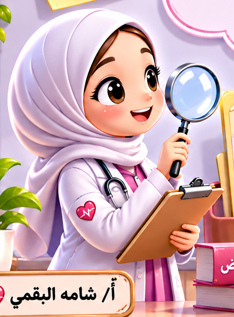

١ / ٥
الاستراتيجية: لعب الأدوار – التشخيص وتفسير الإجابة
🩺 عيادة الطبيبة الصغيرة: شخّصي الحالة

الاستراتيجية: مستويات التفكير الثلاثة
❓ التقويم التكويني
الاستراتيجية: تحدي التفكير الناقد (أسئلة الكتاب)
🧠 تحدي التفكير الناقد
الاستراتيجية: التقويم الختامي
🗂️ افتحي الملف الطبي السري
الاستراتيجية: التعلّم باللعب
🎮 اختاري لعبة
الاستراتيجية: بطاقة الخروج
🎫 ماذا تعلّمت اليوم؟
١) تعلّمت أن المرض: ……………………………
٢) مرض معدٍ: …………… ومرض غير معدٍ: ……………
٣) طريقة تنتقل بها العدوى: ……………………
٤) سأحمي نفسي من العدوى بـ: ……………………
قيّمي فهمك: ⭐⭐⭐ فهمت تمامًا • ⭐⭐ فهمت • ⭐ أحتاج مساعدة